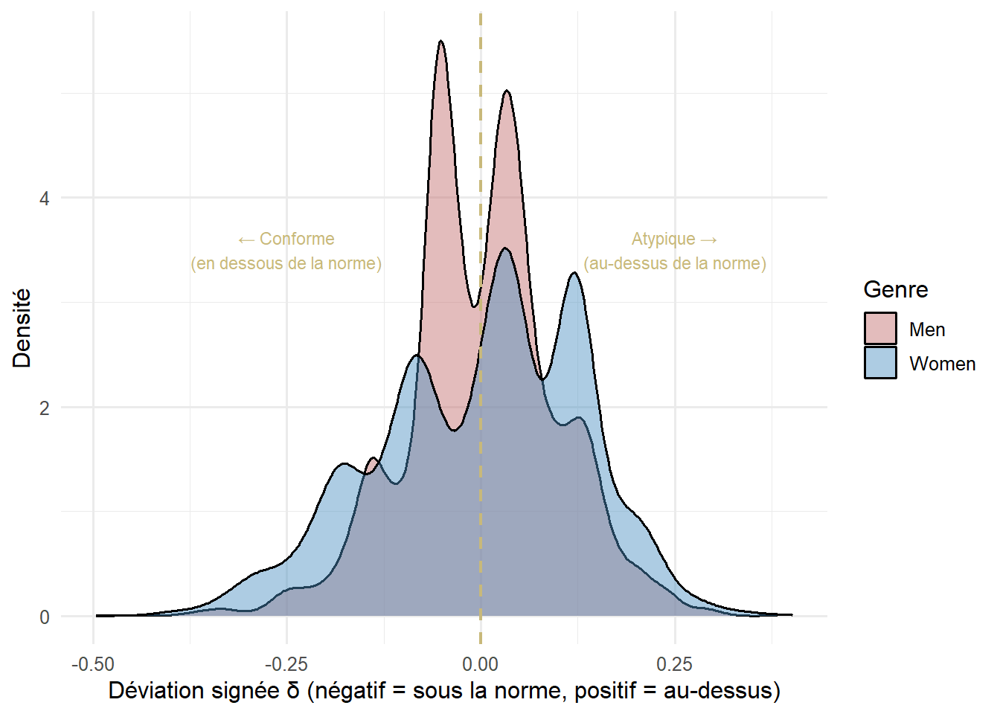

Mesurer l’écart entre l’identité de chacun et la norme de son groupe — et dans quel sens
De la distance à la direction
On pourrait mesurer la déviation simplement comme une distance absolue : combien Marc s’éloigne-t-il de la norme de son groupe, peu importe dans quel sens ? C’est l’indice \(\Delta_i\).
Mais la théorie d’Akerlof & Kranton suggère que la direction de la déviation compte : s’éloigner vers le pôle féminin quand on est un homme n’est peut-être pas la même chose que s’éloigner vers le pôle masculin. Ce projet teste les deux.
\(\bar{\iota}_{g_i}\) = score LASSO moyen de son groupe de sexe
Interprétation : combien \(i\) s’écarte de la norme de son groupe, sans tenir compte de la direction. Marc (homme, score 0,15) et Jordan bis (homme, score 0,95) ont la même distance à la norme masculine — mais leurs profils sont opposés.
Indice 2 — La déviation signée
\[\delta_i = \hat{\iota}_i - \bar{\iota}_{g_i}\]
Interprétation : - \(\delta_i < 0\) → identité en dessous de la norme du groupe (un homme plus féminin que la moyenne des hommes, ou une femme plus féminine que la moyenne des femmes) - \(\delta_i > 0\) → identité au-dessus de la norme du groupe (un homme plus masculin que la moyenne, ou une femme plus masculine que la moyenne)
Cela produit quatre profils distincts :
Les quatre profils en clair
Femme conforme
δ < 0 — identité plus féminine que la norme féminine
Renforce sa position dans la norme prescrite
Femme atypique
δ > 0 — identité plus masculine que la norme féminine
S'écarte vers le pôle opposé à sa norme
Homme atypique
δ < 0 — identité plus féminine que la norme masculine
S'écarte vers le pôle opposé à sa norme
Homme conforme
δ > 0 — identité plus masculine que la norme masculine
Renforce sa position dans la norme prescrite
NotePourquoi distinguer les deux indices ?
\(\Delta_i\) (distance absolue) teste si l’intensité de la déviation importe, indépendamment de sa direction. \(\delta_i\) (déviation signée) teste si la direction importe — et permet de comparer les conformes aux atypiques dans chaque groupe.
Les normes empiriques
library(tidyverse)epc <-readRDS("epc.rds")epc$lasso_inv <-1- epc$score_LASSO_normnormes <- epc |>group_by(Sex) |>summarise(`Norme (score moyen)`=round(mean(lasso_inv, na.rm=TRUE), 3),`Écart-type`=round(sd(lasso_inv, na.rm=TRUE), 3),N =n() )knitr::kable(normes, caption="Norme identitaire empirique par groupe de sexe")
Norme identitaire empirique par groupe de sexe
Sex
Norme (score moyen)
Écart-type
N
Men
0.599
0.098
4162
Women
0.422
0.132
5072
Distribution des quatre profils

Distribution de la déviation signée δ dans les deux groupes de sexe. Les valeurs négatives indiquent une identité en dessous de la norme du groupe ; les valeurs positives au-dessus.